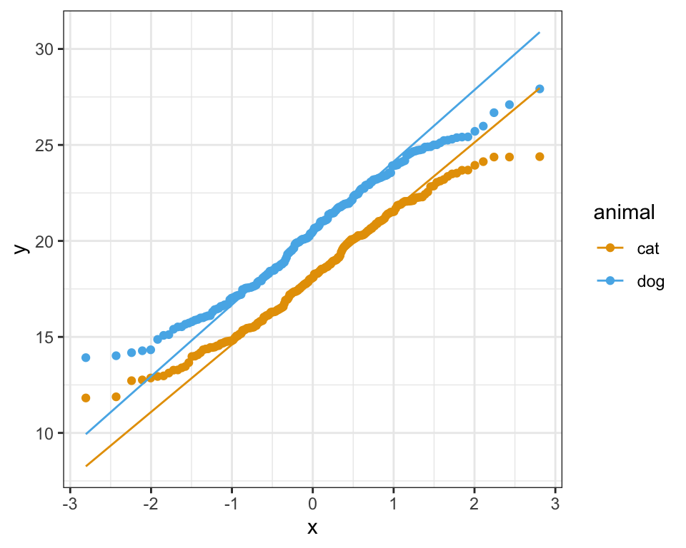

23 Maßzahlen der Modelgüte
Wir interpretieren keine der Gütekriterien und statistischen Maßzahlen alleine sondern in der Gesamtheit.
23.1 Genutzte R Pakete für das Kapitel
Wir wollen folgende R Pakete in diesem Kapitel nutzen.
pacman::p_load(tidyverse, magrittr, conflicted, broom,
see, performance)
conflict_prefer("select", "dplyr")
conflict_prefer("filter", "dplyr")
conflict_prefer("mutate", "dplyr")Am Ende des Kapitels findest du nochmal den gesamten R Code in einem Rutsch zum selber durchführen oder aber kopieren.
23.2 Daten
Nachdem wir uns im vorherigen Kapitel mit einem sehr kleinen Satensatz beschäftigt haben, nehmen wir einen großen Datensatz. Bleiben aber bei einem simplen Modell. Wir brauchen dafür den Datensatz flea_dog_cat_length_weight.xlsx. In einer simplen linearen Regression schauen wir uns den Zusammenhang zwischen einem \(y\) und einem \(x_1\) an. Daher wählen wir aus dem Datensatz die beiden Spalten jump_length und weight. Wir wollen nun feststellen, ob es einen Zusammenhang zwischen der Sprungweite in [cm] und dem Flohgewicht in [mg] gibt. In dem Datensatz finden wir 400 Flöhe von Hunden und Katzen.
model_tbl <- read_csv2("data/flea_dog_cat_length_weight.csv") %>%
select(animal, jump_length, weight)In der Tabelle 30.1 ist der Datensatz model_tbl nochmal dargestellt.
| animal | jump_length | weight |
|---|---|---|
| cat | 16.93 | 6.02 |
| cat | 16.22 | 5.99 |
| cat | 18.96 | 8.05 |
| cat | 19.83 | 6.71 |
| cat | 17.37 | 6.19 |
| cat | 14.45 | 8.18 |
| cat | 15.46 | 7.46 |
Im Folgenden ignorieren wir, dass die Sprungweiten und die Gewichte der Flöhe auch noch von den Hunden oder Katzen sowie dem unterschiedlichen Geschlecht der Flöhe abhängen könnten. Wir schmeißen alles in einen Pott und schauen nur auf den Zusammenhang von Sprungweite und Gewicht.
23.3 Das simple lineare Modell
fit_1 <- lm(jump_length ~ weight, data = model_tbl)23.4 Residualplot
resid_plot_tbl <- fit_1 %>%
augment() %>%
select(.fitted, .resid)
resid_plot_tbl # A tibble: 400 × 2
.fitted .resid
<dbl> <dbl>
1 16.9 0.00438
2 16.9 -0.668
3 19.5 -0.503
4 17.8 2.04
5 17.1 0.232
6 19.6 -5.18
7 18.7 -3.27
8 16.4 -0.566
9 17.1 2.00
10 18.8 -3.09
# … with 390 more rowsggplot(resid_plot_tbl, aes(.fitted, .resid)) +
geom_point() +
geom_hline(yintercept = 0, color = "red") +
theme_bw()
23.5 Bestimmtheitsmaß \(R^2\)
fit_1 %>%
glance() %>%
select(r.squared, adj.r.squared)# A tibble: 1 × 2
r.squared adj.r.squared
<dbl> <dbl>
1 0.306 0.304
23.6 QQ-Plot
Mit dem Quantile-Quantile Plot oder kurz QQ-Plot können wir überprüfen, ob unser \(y\) aus einer Normalverteilung stammt. Oder andersherum, ob unser \(y\) approximativ normalverteilt ist.
Wir brauchen für einen QQ-Plot viele Beobachtungen. Das heißt, wir brauchen auf jeden Fall mehr als 20 Beobachtungen. Dann ist es auch häufig schwierig den QQ-Plot zu bewerten, wenn es viele Behandlungsgruppen oder Blöcke gibt. Am Ende haben wir dann zwar mehr als 20 Beoabchtungen aber pro Kombination Behandlung und Block nur vier Wiederholungen. Und vier Wiederholungen sind zu wenig für eine sinnvolle Interpretation eines QQ-Plots.
ggplot(model_tbl, aes(sample = jump_length)) +
stat_qq() +
stat_qq_line(color = "red") +
theme_bw()
ggplot(model_tbl, aes(sample = jump_length, color = animal)) +
stat_qq() +
stat_qq_line() +
scale_color_okabeito() +
theme_bw()